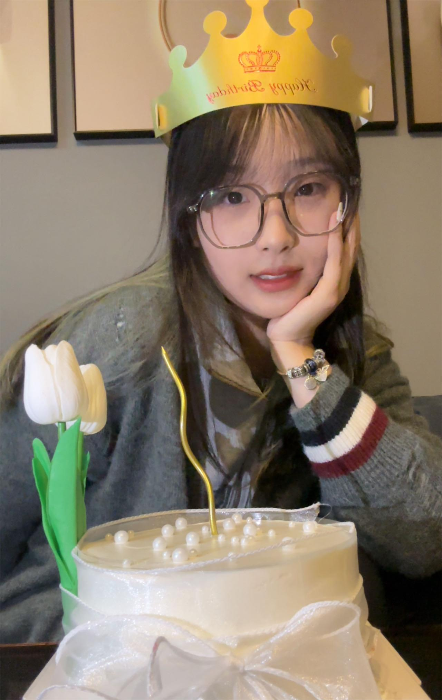

Personal Information
Name: Li Zimeng
Gender: Female
Hometown: Yangzhou City, Jiangsu Province
Major: Communication Engineering
Hobbies: Travel
My Skills
As a dedicated second-year student majoring in Communications Engineering, I have rigorously honed my IT skills, specifically tailoring them to the nuanced demands of my field. My technical repertoire encompasses a robust understanding of network protocols and signal processing, underpinned by a deep engagement with both theoretical and practical aspects of these areas. I am not only proficient in using advanced simulation tools like MATLAB but also adept in network analysis software, which allows me to effectively translate complex concepts into actionable solutions.My academic journey is marked by a series of hands-on projects that have not only fortified my technical skills but also nurtured my problem-solving abilities and innovative thinking. These projects range from designing intricate network solutions to implementing sophisticated signal processing algorithms, each contributing to a deeper understanding of the communications landscape.Complementing my project work, my coursework has been carefully selected to reinforce my core competencies while also broadening my knowledge base. Courses like Advanced Networking, Digital Signal Processing, and Wireless Communications have been instrumental in shaping my technical perspective and providing me with a solid foundation in key areas of communications Engineering. These academic pursuits are supplemented by my active participation in relevant extracurricular activities and workshops, which further enhance my practical skills and industry knowledge.In addition to my academic endeavors, I have actively sought out internship opportunities to apply my learning in real-world scenarios. These experiences have been invaluable in exposing me to the latest trends and technologies in the communications sector, allowing me to stay ahead in a rapidly evolving field.My commitment to continuous learning and development is also evident in my participation in various technical seminars and webinars, which keep me abreast of emerging developments and innovative practices in communications Engineering. This proactive approach to education and skill enhancement is a testament to my dedication to not only excel academically but also to make a meaningful impact in the field of communications Engineering.Looking ahead, I plan to further specialize in areas such as 5G technology and Internet of Things, which are poised to revolutionize the communications landscape. By integrating these advanced technologies into my skill set, I aim to contribute significantly to the development and implementation of cutting-edge communications solutions.
My Travel Photos


My Hobbies
Hot Pot


Nail Art
Billiards
Babycats